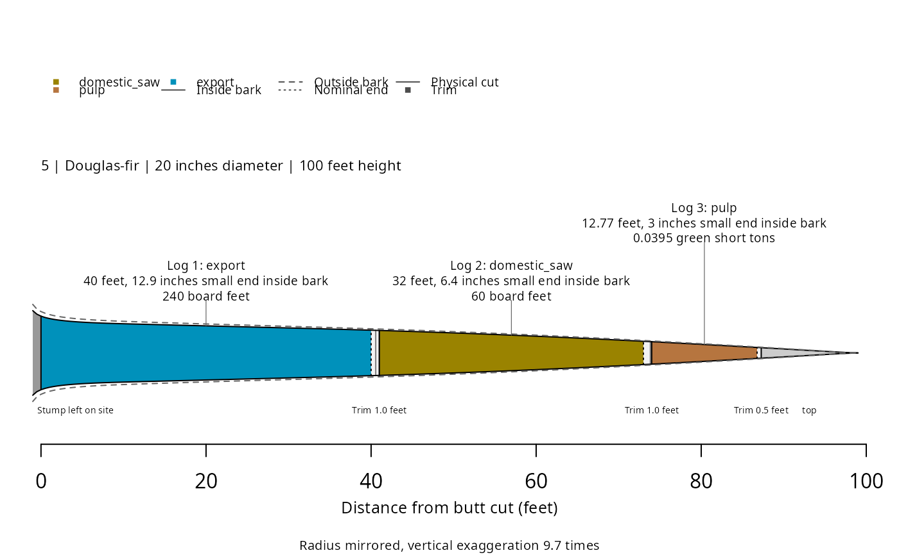

Estimate log and product volumes from forest inventory
Source:R/merchandiser-package.R
merchandiser-package.RdCalculate log dimensions, product volumes, and values from tree measurements, taper equations, product tables, and defects. Fit heights and taper, estimate biomass and carbon, convert volume to green weight, and compile expanded inventory summaries.
Value
The package provides product definitions, calculations, tables, and plotting methods . It imposes no special inventory class.
Working objects
stem_profile() returns modeled diameters and cumulative volumes. products() combines log
specifications, measurement rules, and optional prices.
defect() records located restrictions and deductions. merchandise() returns logs, tree
totals, residual sections, and calculation choices.
Sources
The National Volume Estimator Library supplies the shipped source equations.
nvel_source_revision() records the version used. Local equations can be
registered for an analysis, with their coefficients and inputs saved separately.
Status and missing values
Use status = TRUE in merchandise() to retain tree and log diagnoses. ok means completion
and 410 means a valid result with no logs. Review other
codes and missing quantities before reporting totals.
Structural errors
stop a call. stand_table() keeps failed and absent trees separate when
applying caller-supplied expansion weights.
See also
merchandise() to select logs, product() to state specifications,
defect() to record conditions, stand_table() for expanded totals,
fit_height() to model unmeasured heights.
Author
Maintainer: Hunter Stanke hunter@siskiyoubiometrics.com [copyright holder]
Authors:
Hunter Stanke hunter@siskiyoubiometrics.com [copyright holder]
Examples
## Calculate logs for the shipped tree list
result <- merchandise(dbh = example_trees$dbh,
ht = example_trees$ht,
model = example_trees$model,
species = example_trees$species,
products = example_products(name = 'pnw'),
status = TRUE)
## Inspect the result
plot(result, tree = 5)
